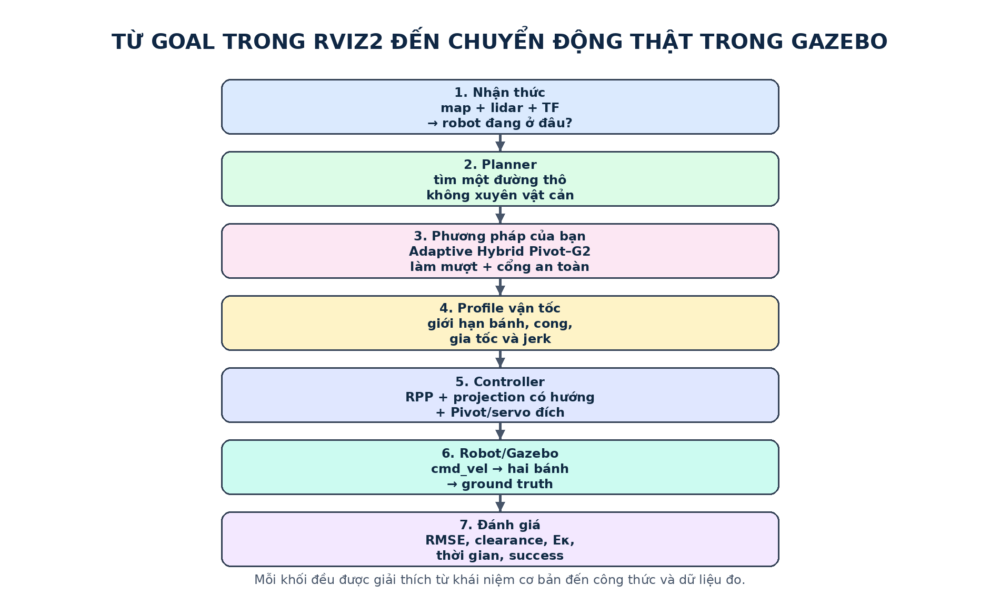
Đối tượng: người mới bắt đầu về robot di động, ROS 2 và lập kế hoạch đường đi. Đây là tài liệu học và vận hành dự án, không phải bài báo hội nghị và không có tài liệu supplement tách rời.
| Phần | Nội dung | Nên đọc khi |
|---|---|---|
| 1–5 | Bài toán, ký hiệu, robot vi sai, ROS 2/Nav2, Gazebo/RViz2 | Bạn mới bắt đầu |
| 6–14 | Toàn bộ thuật toán của bạn từ raw path đến cmd_vel | Bạn muốn hiểu công thức/code |
| 15 | Từng map trong RViz2 và Gazebo, scenario và số liệu | Bạn chuẩn bị chạy mô phỏng |
| 16–18 | Đo lường, so sánh và kết luận phương pháp của bạn mạnh ở đâu | Bạn phân tích kết quả |
| 19–22 | Giới hạn, cách chạy/debug, glossary và tài liệu tham khảo | Bạn phát triển tiếp |
Tóm tắt một câu. Phương pháp của bạn nhận đường gấp khúc từ một global planner, tìm tại mỗi góc một transition Bézier bậc năm G2 hoặc một lệnh Pivot, ghép các lựa chọn bằng quy hoạch động, kiểm tra toàn bộ footprint, dùng cổng Hybrid để fallback an toàn, rồi điều khiển xe bằng RPP có profile vận tốc hai chiều và phản hồi sai số bám.
Global planner thường làm việc trên một lưới ô vuông. Kết quả là một path — chuỗi pose hình học — có thể chứa góc gấp, bậc thang theo grid hoặc đoạn rất sát vật cản. Robot vi sai không thể dịch ngang, bánh xe có giới hạn tốc độ và thân xe có kích thước. Vì vậy robot có thể:
m là mét; s là giây; rad là radian.
Một vòng tròn là 2π rad. Dấu Δ đọc là “delta”, nghĩa là độ thay đổi.
Dấu κ đọc là “kappa”, nghĩa là độ cong. Dấu ∫ là tích phân — có thể hiểu như
cộng rất nhiều phần tử nhỏ. Dấu ′ là đạo hàm.
| Ký hiệu | Đơn vị | Ý nghĩa |
|---|---|---|
| x, y | m | Tọa độ phẳng của tâm robot hoặc một điểm trên đường. |
| θ hoặc ψ | rad | Góc hướng (yaw) của robot/đường so với trục x. |
| φ | rad | Góc đổi hướng tại một đỉnh polyline. |
| v | m/s | Vận tốc tuyến tính của tâm robot. |
| ω | rad/s | Vận tốc góc quanh trục z. |
| vL, vR | m/s | Vận tốc dài tại bánh trái và bánh phải. |
| L | m | Khoảng cách giữa hai mặt phẳng tâm vệt lăn; hiện là 0,2548 m. |
| κ | 1/m | Độ cong; κ=ω/v khi v khác 0. |
| R | m | Bán kính thiết kế dùng để suy ra trim; không phải cung tròn đầu ra. |
| d | m | Khoảng cắt từ đỉnh góc đến điểm vào/ra transition. |
| q | m | Khoảng cách giữa các control point; q=0,35d. |
| P0…P5 | m | Sáu điểm điều khiển của Bézier bậc năm. |
| u | – | Tham số Bézier chạy từ 0 đến 1. |
| B(u) | m | Vị trí trên đường Bézier tại tham số u. |
| B′, B″ | – | Đạo hàm bậc một và hai theo u. |
| Eκ | 1/m | Năng lượng độ cong: tích phân κ² theo chiều dài đường. |
| s | m | Tiến độ hoặc chiều dài cung tích lũy dọc đường. |
| Δs | m | Khoảng cách giữa hai mẫu liên tiếp. |
| Δt | s | Khoảng thời gian giữa hai mẫu. |
| a | m/s² | Gia tốc tuyến tính. |
| ay | m/s² | Gia tốc ngang xấp xỉ v²|κ|. |
| α | rad/s² | Gia tốc góc. |
| j | m/s³ | Jerk: tốc độ thay đổi của gia tốc. |
| v̄ | m/s | Trần vận tốc an toàn tại một điểm. |
| J | – | Cost/hàm mục tiêu cần tối thiểu hóa. |
| e_xy | m | Sai số ngang từ robot đến đường. |
| e_ψ | rad | Sai số giữa hướng robot và tiếp tuyến đường. |
| RMSE | m | Căn trung bình bình phương sai số bám. |
| P95 | m | Phân vị 95%; 95% mẫu không lớn hơn giá trị này. |
| N | – | Số góc của đường. |
| K | – | Số trạng thái ứng viên trung bình tại mỗi góc. |
| λ | – | Trọng số của một thành phần trong hàm mục tiêu. |
| ∞ | – | Vô cùng; trong code thường biểu thị ứng viên không hợp lệ. |
| ε | – | Ngưỡng rất nhỏ để so sánh số thực và tránh chia cho 0. |
Trong bài toán phẳng, pose có thể hiểu là (x, y, ψ). ROS vẫn lưu orientation
bằng quaternion (qx, qy, qz, qw) để tổng quát cho 3D. Với robot không nghiêng,
quaternion yaw có dạng qz=sin(ψ/2), qw=cos(ψ/2). Hàm
atan2(sin ψ, cos ψ) đưa góc về khoảng −π…π, tránh lỗi nhảy từ
+179° sang −179°.
Path chỉ nói “đi qua đâu”. Trajectory còn nói “đến mỗi điểm lúc nào, nhanh bao nhiêu”. Pivot–G2 trước hết tạo path; time-parameterization và speed envelope biến nó thành quy luật vận tốc khả thi.
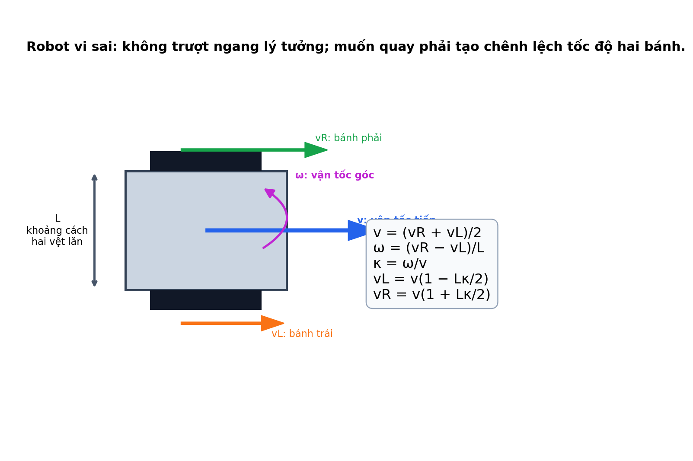
Nếu chuyển động theo một đường có độ cong κ thì ω=vκ. Từ đó:
Khi |Lκ/2|>1, bánh trong phải đảo chiều. Lõi Pivot–G2 hiện loại transition như vậy. Pivot là trường hợp đặc biệt v=0 nhưng ω≠0: hai bánh quay ngược chiều, robot đổi yaw mà tâm gần như đứng yên.
Với κ không đổi và khác 0, bán kính quỹ đạo tâm là 1/|κ|. Tuy nhiên R trong Pivot–G2 chỉ là bán kính thiết kế để tính trim; đường đầu ra là Bézier và κ biến thiên, vì vậy không được gọi R là bán kính cung tròn thực.
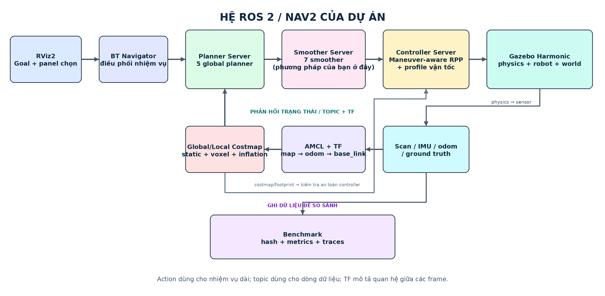
/scan,
/odom, /cmd_vel.ComputePathToPose, SmoothPath,
FollowPath.| Frame | Ai tạo | Ý nghĩa |
|---|---|---|
| world | Gazebo | Hệ tuyệt đối của mô phỏng; nguồn ground truth. |
| map | Map/AMCL | Hệ bản đồ tĩnh mà goal và global path sử dụng. |
| odom | Wheel odometry | Hệ liên tục cục bộ nhưng có thể drift. |
| base_link | Robot model | Gốc thân xe ở cao độ tâm bánh. |
| base_footprint | Fixed joint | Hình chiếu base xuống mặt đất. |
| laser | Robot model | Hệ đo RPLIDAR. |
| imu_link | Robot model | Hệ đo BNO055. |
Chuỗi TF thường là map → odom → base_link. AMCL sửa quan hệ
map→odom; odometry cập nhật odom→base_link. Benchmark không dùng riêng TF để
tự chấm nó: pose vật lý Gazebo được ghi độc lập trong world rồi căn chỉnh về
map để tính ground-truth error.
BT Navigator nhận goal; Planner Server sinh raw path; Smoother Server chạy các plugin; Controller Server phát cmd_vel; costmap và Collision Monitor kiểm tra vật cản. Các node dùng lifecycle để chỉ nhận nhiệm vụ khi đã active.
RViz2 không mô phỏng vật lý. Nó hiển thị message ROS: map, TF, robot, sensor và path. Gazebo mới tích phân lực/chuyển động, tạo va chạm và sensor. Hai cửa sổ phải dùng đúng cùng world/map; environment manager trong dự án chịu trách nhiệm dừng stack cũ và khởi động cặp mới.
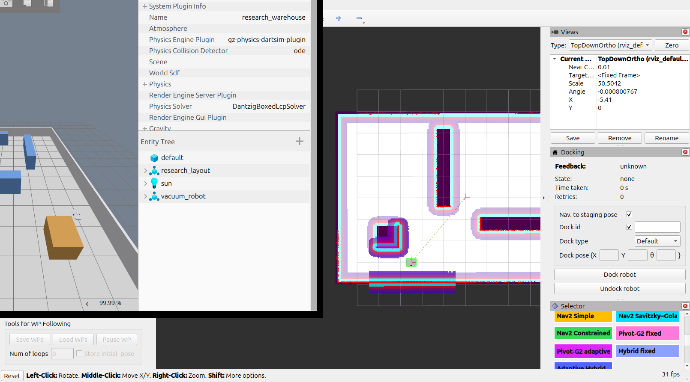

Chassis có envelope 440×340 mm, khối lượng 4,6 kg; hai bánh mỗi bánh 0,2 kg, đường kính 85 mm. Tổng danh nghĩa khoảng 5,0 kg. Footprint Nav2 là hình chữ nhật [(0,22;0,17), (0,22;−0,17), (−0,22;−0,17), (−0,22;0,17)]. Khoảng cách hai tâm vệt lăn vật lý là 0,2548 m. Gazebo DiffDrive dùng 0,2809 m như hệ số hiệu chuẩn tiếp xúc để odometry khớp ground truth; công thức thuật toán vẫn dùng kích thước vật lý 0,2548 m.
Visual là mesh nhìn thấy; collision là hình đơn giản dùng cho vật lý. Thân dùng nhiều box để phủ đúng envelope nhưng chừa hốc bánh. Bốn bi đỡ nhỏ có ma sát thấp. Tách visual/collision giúp mô phỏng ổn định mà vẫn hiển thị CAD chi tiết.
| Cảm biến | Cấu hình mô phỏng | Topic | Vai trò |
|---|---|---|---|
| RPLIDAR A1M8 | 1440 tia, 5,5 Hz, 0,15–12 m, nhiễu 0,01 m | /scan | AMCL và local costmap |
| BNO055 IMU | 100 Hz, nhiễu gyro/accel | /imu/data | Quan sát quay và tích hợp tương lai |
| Wheel odometry | 30 Hz từ DiffDrive | /odom | odom→base_link |
| Gazebo ground truth | 30 Hz, độc lập odometry | /ground_truth/odom | Chấm sai số vật lý |
| Tham số | Giá trị | Vai trò |
|---|---|---|
| Kích thước footprint | 0,44 × 0,34 m | Bao thân robot trong costmap |
| Khoảng cách vệt lăn L | 0,2548 m | Công thức động học và giới hạn bánh |
| Đường kính bánh | 0,085 m | Mô hình Gazebo |
| vmax | 0,30 m/s | Vận tốc tuyến tính tối đa |
| ωmax | 0,80 rad/s | Vận tốc góc tối đa |
| vw,max | 0,36 m/s | Vận tốc dài tối đa của mỗi bánh |
| ay,max | 0,18 m/s² | Giới hạn gia tốc ngang trong cong |
| atăng | 0,35 m/s² | Gia tốc tiến tối đa |
| agiảm | 0,45 m/s² | Độ lớn giảm tốc tối đa |
| αmax | 1,20 rad/s² | Gia tốc góc tối đa |
| jmax | 0,90 m/s³ | Jerk tuyến tính tối đa |
| Khoảng mẫu transition | 0,02 m | Kiểm tra hình học Bézier |
| Khoảng output | 0,05 m | Resample đường đầu ra |
| R thích nghi | 0,10…1,50 m | Miền bán kính thiết kế |
| Đánh giá mỗi góc | 6 đầu, tối đa 20 | Ngân sách coarse-to-fine |
| Ứng viên giữ lại | 5/góc + Pivot | Trạng thái cho DP |
| Footprint cost tối đa | 200 | Gate center cost trước kiểm tra footprint |
.pgm: ảnh occupancy mà RViz2/Nav2 đọc..yaml: resolution, origin và ngưỡng occupied/free..sdf: sàn, tường, kệ, vật cản, ánh sáng và physics Gazebo.Cả bảy map có kích thước 12×8 m, resolution 0,05 m/ô và origin
(−6;−4;0). occupied_thresh=0,65, free_thresh=0,25.
PGM và SDF được sinh từ cùng hình học để vật cản RViz2 trùng vật cản Gazebo.
Static layer nạp map; voxel layer đưa lidar vào local costmap; inflation layer lan chi phí với radius 0,45 m. Center cost giúp đánh giá proximity nhưng không thay cho collision: một tâm an toàn vẫn có thể khiến góc thân xe chạm kệ.
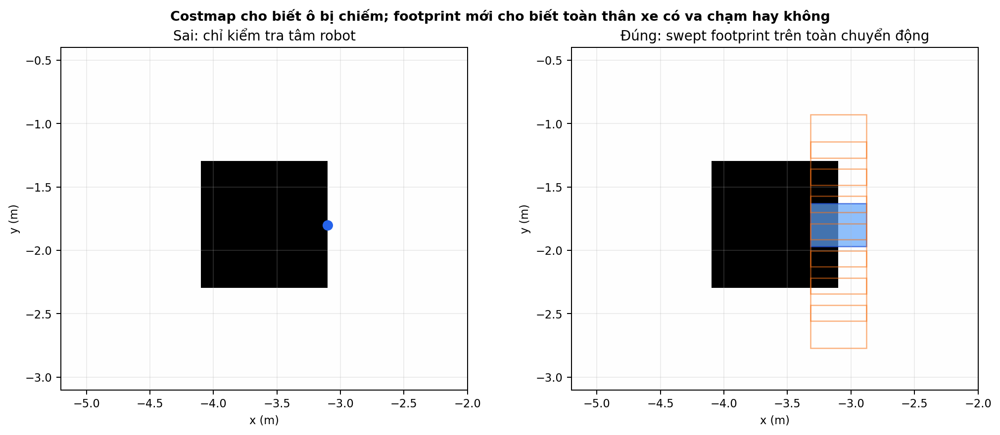
nav_msgs/Path thô từ bất kỳ
planner đã cấu hình.Planner grid có thể tạo các đổi hướng trái–phải nhỏ liên tục. Nếu coi mỗi
đổi hướng là một góc thật, smoother sẽ sinh quá nhiều transition. Hàm
condition_polyline thử nối tắt một chuỗi điểm bằng chord.
Trong benchmark chính, line-of-sight pruning bị tắt để Pivot–G2 và baseline cùng nhận một raw path; nếu bật LOS chỉ cho Pivot thì lợi ích pruning sẽ bị trộn với lợi ích smoothing.
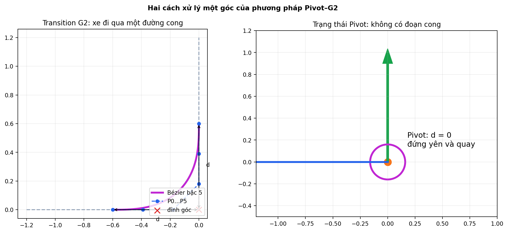
Với vector đơn vị hướng vào ein và hướng ra eout:
Dấu φ cho biết rẽ trái/phải; |φ| là độ lớn. Góc dưới 5° không cần transition; góc gần 180° nằm ngoài miền Bézier và thường phải Pivot.
Tối ưu d thuận lợi vì ràng buộc hai góc kề trở thành phép cộng tuyến tính. Adaptive mode không dùng luật 45% làm điều kiện chính; fixed mode vẫn giữ bank R=[0,20;0,30;…;1,50] m để ablation.
C(5,i) là hệ số nhị thức [1,5,10,10,5,1]. Do P0,P1,P2 thẳng hàng cách đều và tương tự ở đầu kia, B″ tại hai endpoint bằng 0 theo hướng pháp tuyến; κ đầu và cuối là 0. Transition nối với đoạn thẳng có vị trí, hướng và độ cong liên tục theo hình học G2.
Eκ phạt đường cong gắt và kéo dài. Nó không trực tiếp là jerk hay thời gian; vì vậy ứng viên còn phải qua time-parameterization và chạy kín.
Một ứng viên bị loại ngay, không được metric tốt khác “bù”, nếu:
Collision checker và costmap là rời rạc; một thay đổi rất nhỏ có thể làm footprint bước sang ô khác. Hàm objective không trơn và không chắc đơn đỉnh. Thuật toán dùng coarse-to-fine xác định.
J nhỏ hơn tốt hơn. An toàn không nằm trong J; an toàn được kiểm tra trước. Candidate còn phải nằm trong time gate so với Pivot/candidate nhanh nhất.
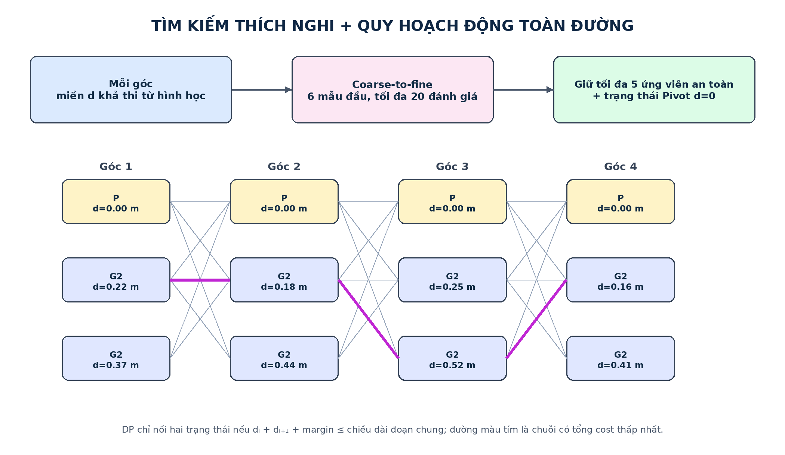
m mặc định bằng max(output spacing, 2×sample spacing, costmap resolution) =max(0,05;0,04;0,05)=0,05 m. Pivot có d=0 nên có thể giải xung đột.
Độ phức tạp O(NK²). Khi bằng cost, code ưu tiên ít Pivot hơn rồi index nhỏ hơn để deterministic. Backtracking lấy chuỗi trạng thái cuối cùng.
Giảm Eκ không đảm bảo controller chạy tốt trong hành lang sát vật cản. Simple đôi khi cho clearance tốt hơn. Do đó phương pháp hoàn chỉnh lấy Simple làm mặc định và chỉ nhận Pivot khi có safety gain đủ rõ.
| Tình trạng | Đường được chọn | Lý do |
|---|---|---|
| Simple và Pivot an toàn; Pivot qua hai gate | Pivot–G2 | Có lợi proximity mà không tăng Eκ quá ngân sách |
| Cả hai an toàn nhưng Pivot không qua gate | Simple | Default bảo thủ |
| Simple không an toàn, Pivot an toàn | Pivot–G2 | simple_unsafe |
| Pivot không an toàn, Simple an toàn | Simple | pivot_unsafe |
| Cả hai không an toàn, Raw an toàn | Raw | raw fallback |
| Raw/Simple/Pivot đều không an toàn | Fail | Không xuất đường nguy hiểm |
Đường thẳng có κ≈0 nên chỉ bị vmax/bánh giới hạn. Cong gắt tăng |κ| làm ba trần còn lại giảm.
Đặt Δv=|v1−v0|, a là giới hạn tăng/giảm tốc, j là jerk. Khi Δv≤a²/j, profile gia tốc tam giác:
Khi Δv>a²/j, profile có đoạn giữ gia tốc:
Code dùng tìm kiếm nhị phân để đảo công thức: biết khoảng cách còn lại thì tìm vận tốc lớn nhất vẫn kịp tăng/giảm.
Chỉ tìm trong cửa sổ 0,25 m sau và 0,80 m trước hint; tiến độ chỉ được lùi tối đa 0,03 m. Khi hai điểm bằng score, chọn s lớn hơn. Đây là sửa lỗi chọn nhầm nhánh gần về khoảng cách nhưng ngược hướng.
Pure Pursuit chọn carrot phía trước. Trong hệ robot, nếu carrot có tọa độ (xL,yL) và khoảng lookahead ℓ thì κ xấp xỉ 2yL/ℓ²; sau đó ω=vκ. RPP của Nav2 còn giảm v theo cost, curvature và time-to-collision.
Wrapper của bạn lấy min giữa RPP và các cap. Khi cross-track, heading hoặc angular-tracking error đi từ soft đến hard, cap giảm bằng smoothstep:
Một safety cap thấp hơn được phép thắng ngay; mẫu đó được gắn
safety_override để không giả vờ rằng jerk vật lý luôn được giữ khi
an toàn đòi hỏi phanh khẩn.
Hai pose trùng vị trí nhưng khác yaw là marker Pivot. Controller dừng dịch chuyển, quay với tốc độ tối đa 0,70 rad/s và deadband 0,015 rad. Tại goal, xe phanh vào staging radius, chốt vị trí đích trong odom, cho phép servo vị trí tiến/lùi tốc độ thấp, rồi căn yaw theo TF mới nhất. Nếu sai số vị trí tăng quá 0,04 m khi đang quay, controller quay lại pha lấy XY.
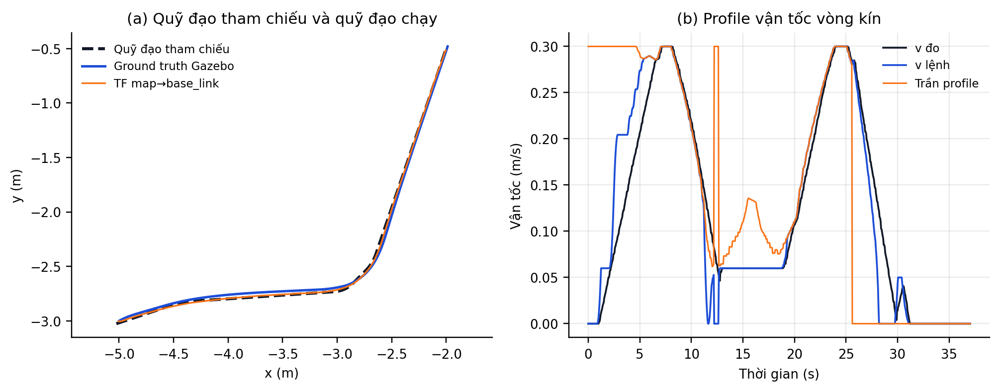
Điểm quan trọng: tốc độ 0,30 m/s là trần, không phải tốc độ cố định. Robot tự chạy chậm tại cong, gần vật cản, khi sai số bám lớn hoặc khi cần phanh; sau cong chỉ tăng lại theo forward acceleration/jerk envelope.
Mỗi hình dưới đây dùng trực tiếp PGM/YAML mà RViz2 hiển thị, SDF mà Gazebo nạp và trace ground truth đã ghi. Các đường xám mờ là toàn bộ scenario start→goal định nghĩa sẵn; xanh dương là path được chọn; cam là chuyển động vật lý.
research_warehouseMôi trường tổng hợp gồm ba kệ khác hướng và một thùng hàng. Nó tạo cả góc vuông, đường chéo, lối hẹp cục bộ và đoạn thẳng dài; đây là map phát triển và kiểm tra hồi quy chính.
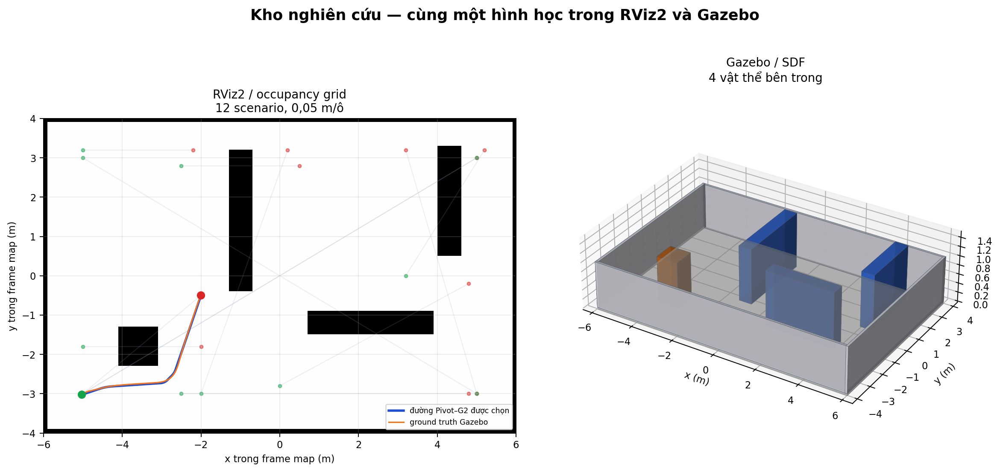
Cách đọc số liệu đại diện. Scenario
lower_left_diagonal dùng ThetaStar +
Pivot–G2 thích nghi + vận tốc thích nghi; thời gian
38.27 s, ground-truth RMSE
1.41 cm, sai số cực đại
2.91 cm, clearance kế hoạch
24.75 cm.
Sai số mà controller nhìn thấy là
0.83 cm; chênh lệch
với ground truth cho thấy ảnh hưởng của định vị.
Các trường hợp thử có sẵn:
| Scenario | Start (m) | Goal (m) |
|---|---|---|
straight_lower_aisle | (-2.50; -3.00) | (4.80; -3.00) |
crate_detour | (-5.00; -1.80) | (-2.00; -1.80) |
vertical_rack_detour | (-2.50; 2.80) | (0.50; 2.80) |
horizontal_rack_detour | (0.00; -2.80) | (4.80; -0.20) |
right_rack_detour | (3.20; 0.00) | (5.20; 3.20) |
long_southwest_to_northeast | (-5.00; -3.00) | (5.00; 3.00) |
long_northeast_to_southwest | (5.00; 3.00) | (-5.00; -3.00) |
crossing_northwest_to_southeast | (-5.00; 3.00) | (5.00; -3.00) |
central_south_to_north | (-2.00; -3.00) | (0.20; 3.20) |
right_south_to_north | (5.00; -3.00) | (3.20; 3.20) |
upper_open_short | (-5.00; 3.20) | (-2.20; 3.20) |
lower_left_diagonal | (-5.00; -3.00) | (-2.00; -0.50) |
narrow_aislesBốn dãy kệ dọc đặt lệch nhau tạo hành lang ngoằn ngoèo. Map này nhấn mạnh clearance của footprint, khả năng đổi hướng liên tiếp và lỗi chọn nhầm nhánh khi các đoạn đường nằm gần nhau.
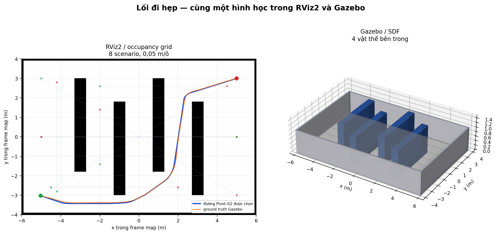
Cách đọc số liệu đại diện. Scenario
southwest_northeast_weave dùng ThetaStar +
Pivot–G2 thích nghi + vận tốc thích nghi; thời gian
71.02 s, ground-truth RMSE
2.97 cm, sai số cực đại
6.00 cm, clearance kế hoạch
14.49 cm.
Sai số mà controller nhìn thấy là
0.83 cm; chênh lệch
với ground truth cho thấy ảnh hưởng của định vị.
Các trường hợp thử có sẵn:
| Scenario | Start (m) | Goal (m) |
|---|---|---|
serpentine_west_east | (-5.00; 0.00) | (5.00; 0.00) |
serpentine_east_west | (5.00; 0.00) | (-5.00; 0.00) |
left_vertical_aisle | (-4.20; -2.80) | (-4.20; 2.80) |
inner_vertical_aisle | (-2.00; -1.40) | (-2.00; 1.40) |
bottom_alternating_cross | (-4.50; -2.60) | (2.00; -2.60) |
top_alternating_cross | (-2.00; 2.60) | (4.50; 2.60) |
southwest_northeast_weave | (-5.00; -3.00) | (5.00; 3.00) |
northwest_southeast_weave | (-5.00; 3.00) | (5.00; -3.00) |
office_mazeCác vách ngăn đứt đoạn, cửa ra vào lệch nhau và ba bàn làm việc tạo đường chữ L/U. Đây là phép thử cho planner ở không gian nhiều ngõ cụt và cho smoother khi hai góc liên tiếp dùng chung một đoạn ngắn.
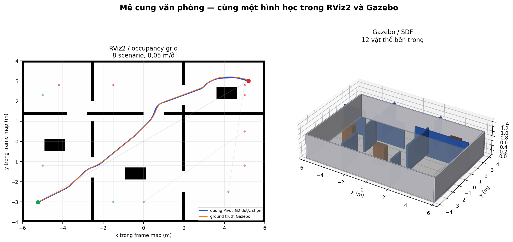
Cách đọc số liệu đại diện. Scenario
office_long_diagonal dùng ThetaStar +
Pivot–G2 thích nghi + vận tốc thích nghi; thời gian
77.67 s, ground-truth RMSE
2.01 cm, sai số cực đại
4.90 cm, clearance kế hoạch
18.83 cm.
Sai số mà controller nhìn thấy là
0.70 cm; chênh lệch
với ground truth cho thấy ảnh hưởng của định vị.
Các trường hợp thử có sẵn:
| Scenario | Start (m) | Goal (m) |
|---|---|---|
office_long_diagonal | (-5.20; -3.00) | (5.20; 3.00) |
office_reverse_diagonal | (5.20; 3.00) | (-5.20; -3.00) |
west_room_to_room | (-4.20; -2.50) | (-4.20; 2.80) |
east_room_to_room | (4.20; -2.50) | (5.00; 2.80) |
lower_cross_offices | (-5.00; -1.20) | (5.00; -1.20) |
upper_cross_offices | (-5.00; 2.30) | (5.00; 2.30) |
central_u_turn | (-1.50; -3.00) | (-1.50; 2.80) |
east_partition_detour | (0.00; -3.00) | (5.00; 0.50) |
open_arenaKhông gian thưa với cột, khối vuông và vách chắn rời rạc. Map tách ảnh hưởng của bản thân thuật toán khỏi ảnh hưởng của hành lang hẹp, phù hợp so sánh độ dài, thời gian và đường chéo.
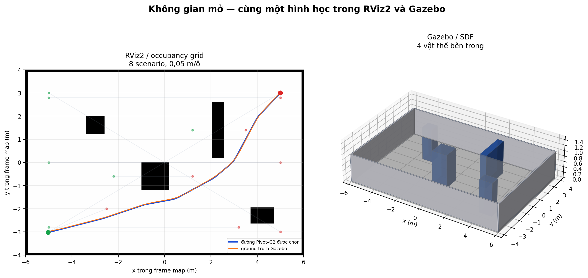
Cách đọc số liệu đại diện. Scenario
southwest_northeast dùng ThetaStar +
Pivot–G2 thích nghi + vận tốc thích nghi; thời gian
50.24 s, ground-truth RMSE
1.62 cm, sai số cực đại
3.04 cm, clearance kế hoạch
21.46 cm.
Sai số mà controller nhìn thấy là
0.68 cm; chênh lệch
với ground truth cho thấy ảnh hưởng của định vị.
Các trường hợp thử có sẵn:
| Scenario | Start (m) | Goal (m) |
|---|---|---|
west_east_center | (-5.00; 0.00) | (5.00; 0.00) |
southwest_northeast | (-5.00; -3.00) | (5.00; 3.00) |
northwest_southeast | (-5.00; 3.00) | (5.00; -3.00) |
center_block_detour | (-2.20; -0.60) | (1.20; -0.60) |
screen_detour | (1.20; 1.40) | (3.50; 1.40) |
long_lower_lane | (-5.00; -2.80) | (3.20; -2.80) |
long_upper_lane | (-5.00; 2.80) | (5.00; 2.80) |
short_open_diagonal | (-5.00; -3.00) | (-2.50; -2.00) |
warehouse_cross_aislesBốn dãy kệ được tách đôi ở giữa để tạo một lối ngang rộng. Robot phải đi từ lối dọc sang lối ngang rồi trở lại lối dọc; đây là bài thử rõ cho đoạn vào cong và thoát cong.
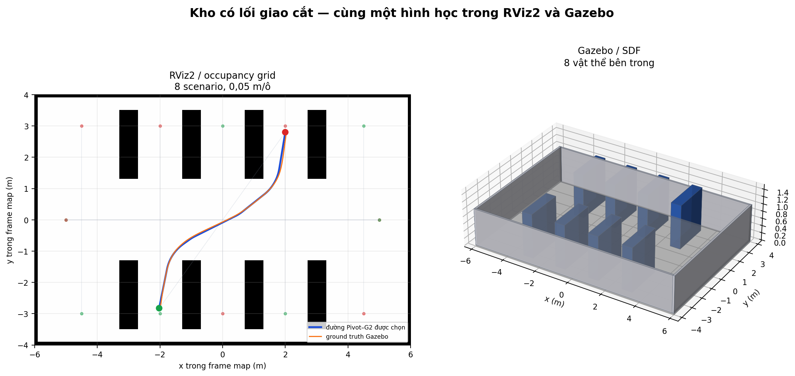
Cách đọc số liệu đại diện. Scenario
cross_aisle_transfer dùng ThetaStar +
Pivot–G2 thích nghi + vận tốc thích nghi; thời gian
38.34 s, ground-truth RMSE
2.56 cm, sai số cực đại
5.69 cm, clearance kế hoạch
14.49 cm.
Sai số mà controller nhìn thấy là
0.92 cm; chênh lệch
với ground truth cho thấy ảnh hưởng của định vị.
Các trường hợp thử có sẵn:
| Scenario | Start (m) | Goal (m) |
|---|---|---|
central_cross_west_east | (-5.00; 0.00) | (5.00; 0.00) |
central_cross_east_west | (5.00; 0.00) | (-5.00; 0.00) |
west_service_lane | (-4.50; -3.00) | (-4.50; 3.00) |
picking_aisle_a | (-2.00; -3.00) | (-2.00; 3.00) |
picking_aisle_b | (0.00; 3.00) | (0.00; -3.00) |
picking_aisle_c | (2.00; -3.00) | (2.00; 3.00) |
east_service_lane | (4.50; 3.00) | (4.50; -3.00) |
cross_aisle_transfer | (-2.00; -2.80) | (2.00; 2.80) |
warehouse_dispatchKho hỗn hợp có vùng chứa hàng, pallet đầu vào, kệ staging, pallet đầu ra và vách dock. Đây là map khó nhất về mật độ vật cản và đã bộc lộ ca phản ví dụ ở 0,22 m/s khiến cổng Hybrid phải fallback.
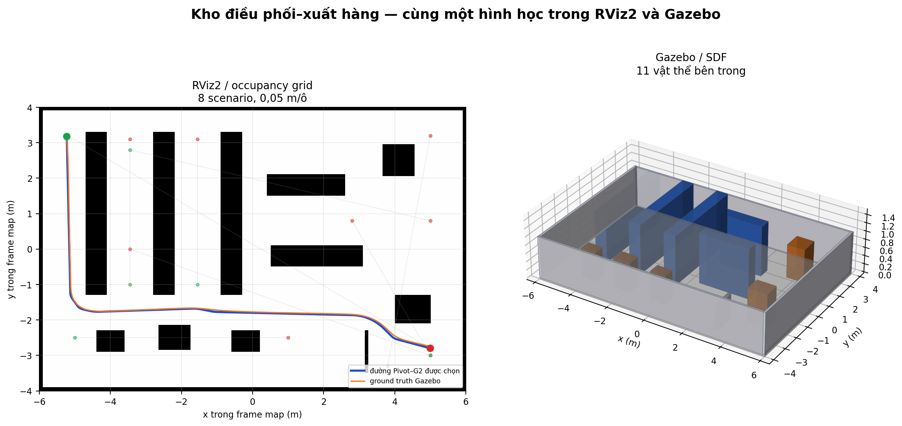
Cách đọc số liệu đại diện. Scenario
full_replenishment dùng ThetaStar +
Pivot–G2 thích nghi + vận tốc thích nghi; thời gian
84.31 s, ground-truth RMSE
2.62 cm, sai số cực đại
6.71 cm, clearance kế hoạch
10.61 cm.
Sai số mà controller nhìn thấy là
0.66 cm; chênh lệch
với ground truth cho thấy ảnh hưởng của định vị.
Các trường hợp thử có sẵn:
| Scenario | Start (m) | Goal (m) |
|---|---|---|
storage_aisle_a | (-3.45; -1.00) | (-3.45; 3.10) |
storage_aisle_b | (-1.55; -1.00) | (-1.55; 3.10) |
storage_to_dispatch | (-3.45; 2.80) | (5.00; 0.80) |
receiving_to_storage | (5.00; -3.00) | (-3.45; 0.00) |
inbound_pallet_slalom | (-5.00; -2.50) | (1.00; -2.50) |
dispatch_lane_south_north | (3.80; -3.30) | (5.00; 3.20) |
inbound_to_staging | (5.00; -3.00) | (2.80; 0.80) |
full_replenishment | (-5.20; 3.20) | (5.00; -2.80) |
warehouse_long_aislesBốn kệ dài song song tạo các lối picking hẹp, nối bằng hành lang chuyển tiếp ở hai đầu. Map kiểm tra quãng đường dài, tích lũy sai số định vị và việc tăng tốc lại sau nhiều đoạn cong.
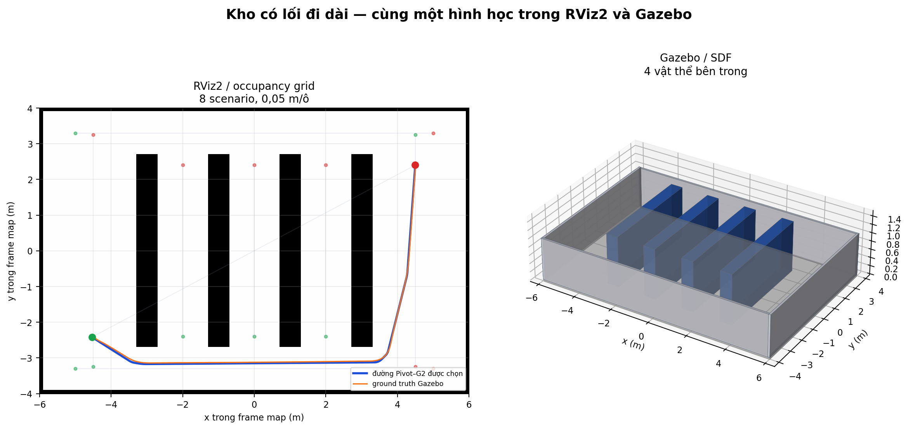
Cách đọc số liệu đại diện. Scenario
diagonal_replenishment dùng ThetaStar +
Pivot–G2 thích nghi + vận tốc thích nghi; thời gian
83.95 s, ground-truth RMSE
2.69 cm, sai số cực đại
6.05 cm, clearance kế hoạch
23.39 cm.
Sai số mà controller nhìn thấy là
0.49 cm; chênh lệch
với ground truth cho thấy ảnh hưởng của định vị.
Các trường hợp thử có sẵn:
| Scenario | Start (m) | Goal (m) |
|---|---|---|
west_service_lane | (-4.50; -3.25) | (-4.50; 3.25) |
picking_aisle_a | (-2.00; -2.40) | (-2.00; 2.40) |
picking_aisle_b | (0.00; -2.40) | (0.00; 2.40) |
picking_aisle_c | (2.00; -2.40) | (2.00; 2.40) |
east_service_lane | (4.50; 3.25) | (4.50; -3.25) |
south_transfer_corridor | (-5.00; -3.30) | (5.00; -3.30) |
north_transfer_corridor | (-5.00; 3.30) | (5.00; 3.30) |
diagonal_replenishment | (-4.50; -2.40) | (4.50; 2.40) |
| Map | Scenario | t (s) | GT RMSE (cm) | GT max (cm) | RMSE điều khiển (cm) | định vị P95 (cm) | clearance (cm) |
|---|---|---|---|---|---|---|---|
| Kho nghiên cứu | lower_left_diagonal | 38.27 | 1.41 | 2.91 | 0.83 | 3.61 | 24.75 |
| Lối đi hẹp | southwest_northeast_weave | 71.02 | 2.97 | 6.00 | 0.83 | 5.62 | 14.49 |
| Mê cung văn phòng | office_long_diagonal | 77.67 | 2.01 | 4.90 | 0.70 | 6.12 | 18.83 |
| Không gian mở | southwest_northeast | 50.24 | 1.62 | 3.04 | 0.68 | 5.44 | 21.46 |
| Kho có lối giao cắt | cross_aisle_transfer | 38.34 | 2.56 | 5.69 | 0.92 | 4.73 | 14.49 |
| Kho điều phối–xuất hàng | full_replenishment | 84.31 | 2.62 | 6.71 | 0.66 | 5.25 | 10.61 |
| Kho có lối đi dài | diagonal_replenishment | 83.95 | 2.69 | 6.05 | 0.49 | 5.01 | 23.39 |
| Metric | Trước | Sau | Cải thiện |
|---|---|---|---|
| Thời gian (s) | 53.094 | 38.265 | 27.9% |
| GT RMSE (cm) | 1.883 | 1.412 | 25.0% |
| Sai số vị trí cuối (cm) | 2.309 | 1.071 | 53.6% |
| Sai số yaw cuối (rad) | 0.0138 | 0.0061 | 55.6% |
| Phương pháp | Ý tưởng | Điểm mạnh | Điểm yếu trong bài toán này |
|---|---|---|---|
| Raw | Giữ nguyên planner output | Không thêm runtime/sai lệch | Góc gấp, Eκ lớn |
| Nav2 Simple | Gradient smoothing cục bộ | Nhanh, robust, clearance tốt | Không mô hình Pivot/G2 riêng |
| Savitzky–Golay | Lọc đa thức theo cửa sổ | Rất nhanh, giữ trend | Có thể khó xử lý inversion/góc đặc biệt |
| Constrained | Tối ưu có cost/smooth constraints | Bám costmap và điều kiện biên | Runtime cao hơn, không có Pivot state của dự án |
| Pivot–G2 fixed | Thử bank R cố định | Ablation rõ, Eκ thấp | Lượng tử hóa bán kính, xử lý overlap kém linh hoạt |
| Pivot–G2 adaptive | Tìm d liên tục + DP | Eκ thấp nhất, R riêng từng góc | Pure branch không luôn robust chạy kín |
| Adaptive Hybrid Pivot–G2 | Safety gate Simple/Pivot/Raw | Hoàn thành tốt, clearance cao, giữ lợi ích G2 khi đáng chọn | Không luôn có Eκ thấp bằng pure Pivot vì chủ động fallback |

| Phương pháp | Thành công | Eκ (1/m) | clearance (cm) | chiều dài (m) | lệch raw (cm) | runtime (ms) |
|---|---|---|---|---|---|---|
| Raw (chưa làm mượt) | 897/900 | 30.394 | 28.29 | 8.217 | 0.00 | 4.00 |
| Nav2 Simple | 894/900 | 8.790 | 30.94 | 8.162 | 0.56 | 0.69 |
| Savitzky–Golay | 888/900 | 15.067 | 30.94 | 8.158 | 0.11 | 0.14 |
| Nav2 Constrained | 894/900 | 15.004 | 30.64 | 8.218 | 0.56 | 10.87 |
| Pivot–G2 bán kính cố định | 882/900 | 2.074 | 31.01 | 8.087 | 1.76 | 2.94 |
| Pivot–G2 thích nghi | 882/900 | 2.378 | 30.80 | 8.082 | 1.86 | 6.09 |
| Hybrid dùng Pivot cố định | 897/900 | 7.708 | 31.14 | 8.171 | 0.70 | 3.93 |
| Adaptive Hybrid Pivot–G2 | 897/900 | 7.825 | 31.15 | 8.170 | 0.69 | 7.11 |
Pivot–G2 thích nghi giảm 92.2% Eκ so với Raw. Adaptive Hybrid giảm 74.3%, đạt 897/900 và clearance trung bình 31.15 cm. Pure Pivot có Eκ thấp hơn Hybrid vì Hybrid cố ý giữ Simple ở ca mà Pivot không đủ safety gain.

| Map | Raw Eκ | Pivot A Eκ | Pivot giảm | Hybrid A Eκ | Hybrid clearance (cm) | Hybrid OK |
|---|---|---|---|---|---|---|
| Kho nghiên cứu | 27.80 | 2.32 | 91.7% | 3.65 | 26.28 | 180/180 |
| Lối đi hẹp | 70.61 | 3.17 | 95.5% | 34.71 | 29.30 | 120/120 |
| Mê cung văn phòng | 53.86 | 4.42 | 91.8% | 8.62 | 18.66 | 117/120 |
| Không gian mở | 17.50 | 2.27 | 87.0% | 2.61 | 26.86 | 120/120 |
| Kho có lối giao cắt | 5.40 | 0.31 | 94.2% | 0.48 | 54.44 | 120/120 |
| Kho điều phối–xuất hàng | 34.07 | 3.76 | 89.0% | 6.07 | 22.48 | 120/120 |
| Kho có lối đi dài | 5.42 | 0.62 | 88.6% | 0.74 | 42.19 | 120/120 |
| Phương pháp | OK | t (s) | GT RMSE (cm) | GT max (cm) | exit RMSE (cm) | vmax (m/s) | jerk P95 |
|---|---|---|---|---|---|---|---|
| Raw (chưa làm mượt) | Có | 33.17 | 2.59 | 4.38 | 2.96 | 0.300 | 0.900 |
| Nav2 Simple | Có | 28.67 | 3.75 | 7.54 | 5.31 | 0.300 | 0.900 |
| Savitzky–Golay | Có | 35.67 | 2.59 | 4.62 | 3.31 | 0.300 | 0.900 |
| Nav2 Constrained | Có | 33.41 | 2.65 | 4.74 | 2.32 | 0.300 | 0.900 |
| Pivot–G2 bán kính cố định | Có | 38.18 | 2.23 | 3.77 | 2.86 | 0.300 | 0.900 |
| Pivot–G2 thích nghi | Có | 36.82 | 1.94 | 3.05 | 2.27 | 0.300 | 0.900 |
| Hybrid dùng Pivot cố định | Có | 36.67 | 2.23 | 3.19 | 2.77 | 0.300 | 0.900 |
| Adaptive Hybrid Pivot–G2 | Có | 37.07 | 2.33 | 3.88 | 2.44 | 0.300 | 0.900 |
Trong scenario chính, Pivot–G2 thích nghi có GT RMSE/exit RMSE tốt nhất trong nhóm nổi bật, nhưng kết luận không nên chỉ dựa một scenario. Toàn ma trận phân tầng có 41/42 thành công.

| Planner | OK | t (s) | GT RMSE (cm) | RMSE điều khiển (cm) | exit (cm) |
|---|---|---|---|---|---|
| NavFnAStar | Có | 48.42 | 2.41 | 0.62 | 2.60 |
| NavFnDijkstra | Có | 38.88 | 2.47 | 0.62 | 2.96 |
| Smac2D | Có | 30.65 | 3.19 | 1.38 | 3.53 |
| SmacHybrid | Có | 38.12 | 4.31 | 1.45 | 5.49 |
| ThetaStar | Có | 36.92 | 2.42 | 0.71 | 2.86 |
Smoother của bạn là hậu xử lý: nó không thay planner. Raw path khác nhau theo planner nên kết quả cuối cũng khác; benchmark tách planner ID và hash để không so sánh nhầm input.
Tại
warehouse_dispatch/full_replenishment, ThetaStar + pure Pivot–G2
ở 0,22 m/s thất bại do RPP liên tục dự báo collision và kết thúc
PATIENCE_EXCEEDED. Trên đúng cùng raw_path_sha256, Adaptive Hybrid
chọn Simple, tăng clearance kế hoạch từ 10,61 cm lên 14,49 cm và hoàn thành
trong 95,35 s. Vì vậy tên phương pháp hoàn chỉnh phải nhấn mạnh Hybrid safety
gate, không nên tuyên bố pure Pivot luôn tốt nhất.
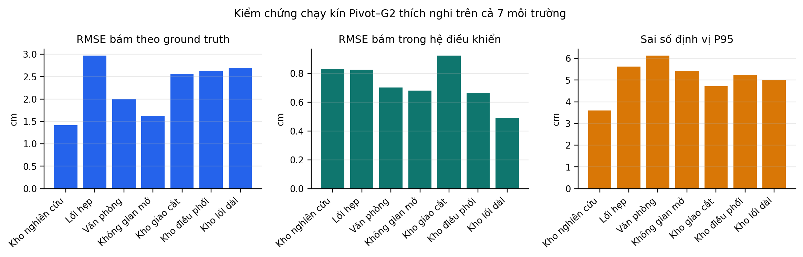
| Thành phần | Nguồn | Vai trò trong hệ của bạn |
|---|---|---|
| ROS 2/Nav2/Gazebo/RViz2 | Nền tảng mã nguồn mở | Middleware, navigation servers, physics và visualization |
| NavFn/Theta*/Smac | Planner Nav2 | Sinh raw path |
| Simple/SG/Constrained | Baseline Nav2 | Đối chứng và nhánh Simple trong Hybrid |
| Bézier bậc năm G2 | Cơ sở toán học đã có trong nghiên cứu | Dạng transition được hiện thực và ràng buộc theo robot |
| Adaptive trim search + DP + diagnostics | Phần phát triển của dự án | Tự chọn candidate toàn đường |
| Safety-gated Hybrid có Raw fallback | Phần phát triển của dự án | Độ robust của phương pháp hoàn chỉnh |
| Bidirectional jerk-aware speed envelope | Phần phát triển của dự án | Phanh trước và tăng lại sau cong khả thi |
| Heading-aware projection + terminal servo | Phần phát triển của dự án | Sửa hướng sai, lệch sau cong và goal |
| Ground-truth benchmark phân tầng | Phần phát triển của dự án | Đo vật lý, định vị và controller riêng |
cd /home/linh-pham/agv_nav2_research_ws
source /opt/ros/jazzy/setup.bash
colcon build --symlink-install
source install/setup.bash
ros2 launch vacuum_robot_gazebo switchable_simulation.launch.py gui:=true
adaptive_hybrid
| Topic | Nội dung |
|---|---|
/research/goal_pose | Goal nghiên cứu từ RViz2 |
/planner_selector | Planner đang chọn |
/research/smoother_visibility | Các đường đang bật/ẩn |
/research/environment_selector | Yêu cầu đổi world/map |
/research/metrics | Metric từng đường |
/research/adaptive_speed | Cap, phase, sai số và safety override |
/cmd_vel | Lệnh vận tốc cuối |
/odom | Wheel odometry |
/ground_truth/odom | Pose vật lý Gazebo |
/scan | Lidar |
colcon test --packages-select adaptive_pivot_g2
adaptive_pivot_g2_nav2 adaptive_pivot_g2_controller
adaptive_pivot_g2_benchmark adaptive_pivot_g2_rviz vacuum_robot_gazebo
colcon test-result --all --verbose
Bảng này giải nghĩa thuật ngữ theo đúng ngữ cảnh dự án; cùng một từ có thể có nghĩa rộng hơn trong lĩnh vực khác.
| Thuật ngữ tiếng Anh | Giải nghĩa trong dự án |
|---|---|
| Action | Cơ chế ROS cho tác vụ kéo dài, có goal, feedback, result và khả năng hủy. |
| Adaptive | Thích nghi: tham số được chọn theo từng dữ liệu đầu vào thay vì một giá trị cố định. |
| AMCL | Adaptive Monte Carlo Localization: định vị robot trên map bằng particle filter. |
| Baseline | Phương pháp đối chứng dùng làm mốc so sánh. |
| Behavior Tree (BT) | Cây hành vi điều phối tuần tự/rẽ nhánh các tác vụ Nav2. |
| Bézier curve | Đường cong đa thức được xác định bởi các điểm điều khiển. |
| Camera-ready | Bản cuối để xuất bản; không liên quan đến báo cáo giáo trình này. |
| Clearance | Khoảng hở nhỏ nhất từ footprint robot đến vật cản. |
| Closed loop | Vòng kín: lệnh được cập nhật bằng phản hồi trạng thái robot thực/mô phỏng. |
| Coarse-to-fine | Tìm kiếm thô đến tinh: lấy mẫu rộng trước rồi chia nhỏ vùng đáng chú ý. |
| Collision | Va chạm hoặc cấu hình hình học giao với vật cản. |
| Controller | Bộ điều khiển biến đường tham chiếu thành lệnh vận tốc. |
| Cost | Đại lượng số biểu thị mức xấu/rủi ro; nhỏ hơn thường tốt hơn. |
| Costmap | Lưới chi phí 2D của Nav2; ô càng đắt càng gần/nguy hiểm với vật cản. |
| Curvature | Độ cong; đo mức hướng tiếp tuyến thay đổi trên một mét đường. |
| Deterministic | Xác định: cùng đầu vào và tham số cho cùng kết quả. |
| Differential drive | Kiểu xe hai bánh chủ động độc lập; quay nhờ chênh lệch tốc độ bánh. |
| Dynamic Programming (DP) | Quy hoạch động: ghép nghiệm tối ưu từ các trạng thái con và quan hệ tương thích. |
| Fallback | Phương án dự phòng an toàn khi phương án ưu tiên không hợp lệ. |
| Footprint | Đa giác chiếu bằng đại diện toàn thân robot trong costmap. |
| Frame | Hệ tọa độ có gốc và hướng riêng, ví dụ map, odom, base_link. |
| G1 continuity | Liên tục vị trí và hướng tiếp tuyến, nhưng độ cong có thể nhảy. |
| G2 continuity | Liên tục vị trí, hướng tiếp tuyến và độ cong theo hình học. |
| Gazebo | Trình mô phỏng vật lý, cảm biến và thế giới 3D. |
| Global planner | Thuật toán tìm đường từ start đến goal trên global costmap. |
| Goal checker | Thành phần quyết định robot đã đến đích và dừng hay chưa. |
| Ground truth | Pose lấy trực tiếp từ vật lý Gazebo, không qua odometry/AMCL. |
| Hard constraint | Ràng buộc bắt buộc; vi phạm là loại ứng viên, không được metric khác bù. |
| Hash / SHA-256 | Dấu vân tay dữ liệu dùng xác nhận các phương pháp nhận cùng raw path. |
| Hybrid | Lai: chọn giữa nhiều nhánh thuật toán theo luật định trước. |
| Inflation layer | Lớp costmap lan chi phí ra quanh vật cản để phản ánh độ gần. |
| Interpolation | Nội suy giá trị ở giữa các mẫu đã biết. |
| Jerk | Đạo hàm của gia tốc; jerk lớn tạo thay đổi lệnh đột ngột. |
| Lifecycle node | Node ROS có các trạng thái configure/activate/deactivate/cleanup. |
| Localization | Định vị: ước lượng robot đang ở đâu trong map. |
| Lookahead / carrot | Điểm nhìn trước trên đường mà Pure Pursuit hướng tới. |
| Map server | Node phát occupancy map cho Nav2. |
| Marker Pivot | Hai pose cùng vị trí nhưng khác yaw, biểu diễn lệnh dừng và quay tại chỗ. |
| Nav2 | Navigation2: tập node điều hướng chuẩn của ROS 2. |
| Node | Một tiến trình/thành phần ROS có publisher, subscriber, service hoặc action. |
| Nonholonomic | Ràng buộc chuyển động khiến xe không thể trượt ngang tức thời. |
| Occupancy grid | Ảnh lưới biểu diễn ô trống, ô bị chiếm và ô chưa biết. |
| Odometry | Ước lượng chuyển động tương đối tích lũy từ bánh/IMU. |
| Open loop | Vòng hở: không dùng phản hồi thực để sửa lệnh đang phát. |
| Path | Chuỗi pose hình học; chưa nhất thiết có thời gian/vận tốc. |
| Planner | Bộ tìm đường hình học từ điểm đầu đến điểm cuối. |
| Plugin | Thành phần có thể nạp động vào server mà không sửa lõi Nav2. |
| Polyline | Đường gấp khúc gồm nhiều đoạn thẳng nối tiếp. |
| Pose | Vị trí cộng hướng của một vật thể. |
| Projection | Phép tìm điểm tương ứng gần nhất của robot trên đường tham chiếu. |
| QoS | Quality of Service: luật độ tin cậy, lưu mẫu và độ bền của topic ROS. |
| Quaternion | Biểu diễn hướng 3D bằng bốn số; tránh singularity của Euler angle. |
| Raw path | Đường đầu ra planner trước mọi bước làm mượt. |
| Regulated Pure Pursuit (RPP) | Pure Pursuit có thêm giảm tốc theo cong, cost và va chạm dự báo. |
| Repetition | Lần lặp thí nghiệm độc lập cùng cấu hình. |
| Resampling | Lấy lại mẫu đường với khoảng cách đều hơn. |
| Robot Operating System 2 | Middleware và hệ sinh thái giao tiếp cho robot; không phải hệ điều hành kernel. |
| RViz2 | Công cụ trực quan hóa map, TF, robot, sensor, path và panel điều khiển. |
| Safety gate | Cổng quyết định chỉ cho một nhánh đi qua khi thỏa điều kiện an toàn. |
| Scenario | Một trường hợp thử gồm map, start, goal và cấu hình liên quan. |
| SDF | Simulation Description Format: mô tả world, model, collision, sensor và plugin Gazebo. |
| Servo | Điều khiển phản hồi cục bộ đưa sai số vị trí/hướng về gần 0. |
| Smoother | Bộ hậu xử lý làm đường planner bớt gấp khúc và khả thi hơn. |
| Smoothstep | Hàm 3r²−2r³ chuyển giá trị trơn với slope bằng 0 ở hai đầu. |
| Speed cap | Giới hạn trên của vận tốc tại một điểm; controller có thể chạy chậm hơn. |
| S-curve | Profile gia tốc có các đoạn jerk hữu hạn, tránh bước nhảy gia tốc. |
| Swept footprint | Hợp của footprint khi robot quét dọc toàn đoạn chuyển động. |
| Telemetry | Dữ liệu trạng thái/giới hạn/metric phát ra để theo dõi và debug. |
| TF | Thư viện/cây biến đổi hệ tọa độ của ROS. |
| Time parameterization | Gắn vận tốc và thời gian vào đường hình học dưới các giới hạn động học. |
| Topic | Kênh publish–subscribe truyền luồng message bất đồng bộ. |
| Trajectory | Đường có thêm quy luật thời gian, vận tốc và thường cả gia tốc. |
| Transition | Đoạn chuyển tiếp thay góc gấp bằng chuyển động cong hoặc Pivot. |
| URDF | Unified Robot Description Format: mô tả link/joint robot cho ROS. |
| Voxel layer | Lớp costmap 3D cục bộ tổng hợp dữ liệu sensor theo voxel. |
| Yaw | Góc quay quanh trục z, tức hướng nhìn của robot trên mặt phẳng. |
| Nội dung | File chính |
|---|---|
| Bézier G2 | src/adaptive_pivot_g2/src/quintic_transition.cpp |
| Adaptive search | src/adaptive_pivot_g2/src/adaptive_search.cpp |
| DP | src/adaptive_pivot_g2/src/path_optimization.cpp |
| Hybrid gate | src/adaptive_pivot_g2/src/hybrid_selection.cpp |
| Nav2 smoother | src/adaptive_pivot_g2_nav2/src/ |
| Speed envelope | src/adaptive_pivot_g2_controller/src/adaptive_speed_profile.cpp |
| Maneuver-aware RPP | src/adaptive_pivot_g2_controller/src/maneuver_aware_rpp_controller.cpp |
| Benchmark | src/adaptive_pivot_g2_benchmark/ |
| Cấu hình | src/vacuum_robot_gazebo/config/nav2_params.yaml |
| Map/world | src/vacuum_robot_gazebo/maps/ và worlds/ |
Kết luận cuối. Điểm riêng mạnh nhất của hệ không phải chỉ là một đường Bézier đẹp. Đó là chuỗi logic kín: ứng viên G2/Pivot thích nghi → DP chống overlap → swept-footprint → Hybrid fallback → speed envelope hai chiều → RPP có projection/servo → benchmark ground truth. Pure Pivot tối ưu độ cong; Adaptive Hybrid Pivot–G2 mới là phương pháp hoàn chỉnh nên dùng để chạy xe.